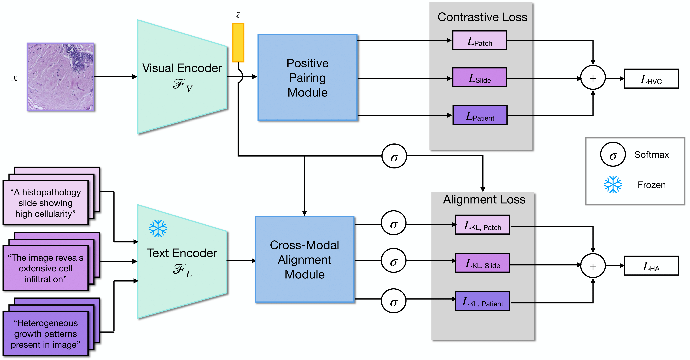
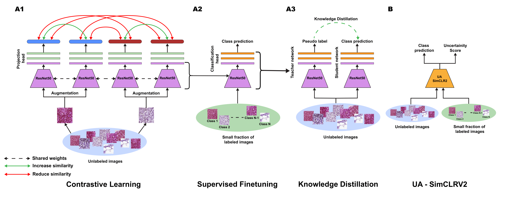
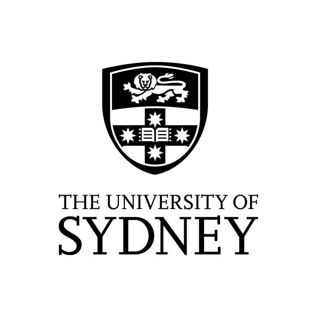
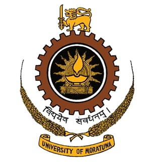

|

|
Hierarchical Text-to-Vision Self Supervised Alignment for Improved Histopathology Representation Learning
Hasindri Watawana, Kanchana Ranasinghe, Tariq Mahmood, Muzammal Naseer, Salman Khan, Fahad Shahbaz Khan
Paper
-
Description: Developed a novel language-tied histopathology image representation learning framework that explores the inherent hierarchy in histopathology image and text data.
-
Outcome: Achieved state-of-the-art (SOTA) performance on two medical imaging benchmarks, OpenSRH and TCGA datasets. Our framework also provides better interpretability with the language aligned representation space.
|
|

|
Contrastive Deep Encoding Enables Uncertainty Aware Machine Learning Assisted Histopathology
Nirhoshan Sivaroopan*,
Chamuditha Jayanga*,
Chalani Ekanayake*,
Hasindri Watawana*,
Jathurshan Pradeepkumar, Mithunjha Anandakumar, Ranga Rodrigo, Chamira U. S. Edussooriya, Dushan N. Wadduwage
(* denotes equal contribution)
Paper
-
Description: Developed a self-supervised deep representation learning model for histopathology
capable of assessing prediction uncertainty.
-
Outcome: Achieved SOTA performance in patch and slide level classification on multiple cancer image datasets with only 1-10% annotations compared to benchmark.
Our uncertainty-aware annotation method reaches SOTA with significantly fewer annotations compared to randomly selected annotation of data.
|
|
| | | | | | | | | | | | | | MBZUAI, UAE
Research Assistant
Jul 2023 - Present
Advisor: Fahad Khan
|
| 
| | | | | | University of Sydney, Australia
Research Intern
Jan 2022 - Aug 2022
Advisor: Kanchana Thilakarathna
|
| 
| | | | | | | | |
| | | | | | | | | | University of Moratuwa, Sri Lanka
Bachelor's in Science (Engineering) specialized in Electronics and Telecommunication
Nov 2018 - Jul 2023
|
I borrowed this website layout from here!
|
|
{kind=link}